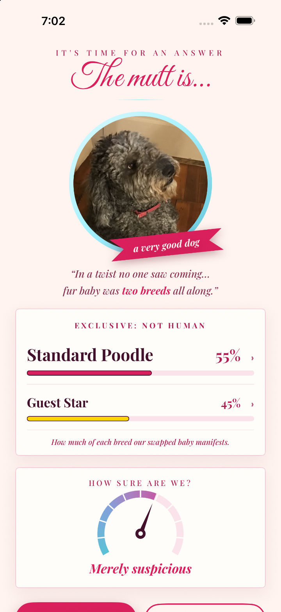
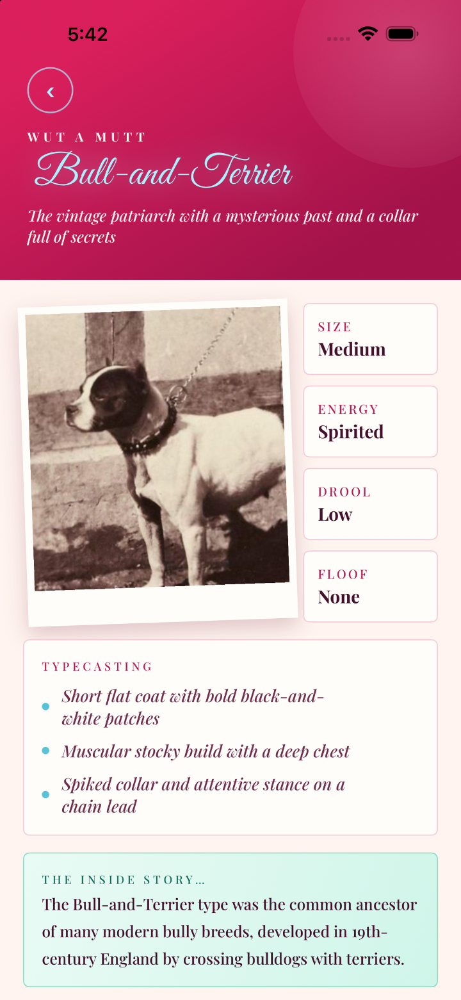
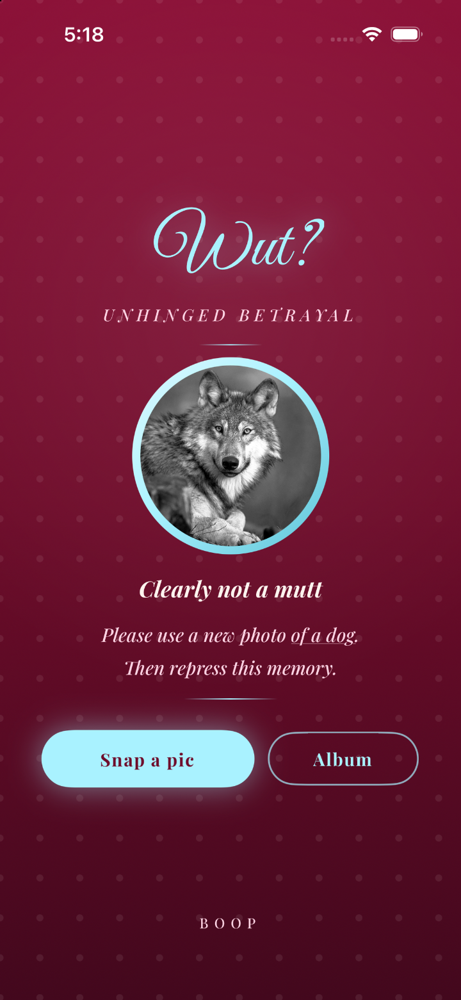

Product design · iOS
Wut Mutt

Outcome
Shipped solo to the App Store, September 2026. Real-world testing before launch mapped where the AI model was unreliable, and I set an honest fallback for every way a result could go wrong. When the model can’t tell poodle mixes apart, the app says “Poodle + Guest Star” rather than guessing.
Problem
Wut Mutt guesses a dog’s breeds from a photo, for people meeting a dog at a shelter or on the street. The experience is staged as a soap opera with dramatic reveals and a cast of breeds. The app only has value if people can trust what it tells them, but the model’s accuracy varies with each unique dog.
Some breeds it reads reliably. Others it confuses with lookalikes. A few it shouldn’t name at all, because the label carries consequences outside the app.
Experts vary the same way. A doodle mix challenges a vet, too. The difference is that an app has to decide, in advance, how to be honest about what it doesn’t know.
My role
I defined the product, made the design decisions, tested with real dogs and photos, identified bugs, and shipped. Claude Design and Claude Code handled the build, including accessibility checks, based on the visual references I provided. Claude Code proposed, measured, and enforced rules. I directed, and several of my overrides became the standards the rest of the build was held to.
Constraints
There are four ways the model can mislead, with a different answer for each.
| Model limitation | Solution | Rule |
|---|---|---|
| Poodle mixes: can’t distinguish doodle types | “Poodle + Guest Star” | Admit uncertainty |
| Small fluffy dogs: several lookalikes read as equally likely | One best guess, no stacked near-duplicates | Refuse false precision |
| Pit-type breeds: can’t differentiate near-identical lineages, and a label with real-world consequences | One result, named for the origin breed, “bull-and-terrier.” Individual pit-type breeds are never listed | Consolidate. Never hand out a potentially harmful label. |
| Wolves: not a dog, and a safety risk if treated as one | No-result screen | Decline to answer |
The pit-type and wolf decisions are about real-world consequences in addition to accuracy. Giving a dog a pit-type label can have implications for adoption and housing, even though the app is meant for entertainment. The same thinking informed a tone rule: the soap opera teases breed secrets but doesn’t judge them. Negative backstories are banned.
Classifying a wolf as a type of dog could invite someone to approach the animal with false security. The “not a dog” result is a user-safety choice.
To reinforce the decision to reduce false precision, I added a certainty dial. The dial shows the result’s certainty as a needle, not a number, based on rules that interpret the model’s confidence. When a Guest Star is billed at 40% or more, the dial is farther to the left and labeled “Merely suspicious.”
Guiding principle
Sounding sure isn’t the same as being right.
I tested photos of Violet, a goldendoodle with a silver coat, taken at different ages. The model consistently identified her as a type of poodle, but the specifics varied. Depending on her haircut, the result could be all poodle, or a mix like bernedoodle, but was never correctly goldendoodle.
Since a confidently wrong answer would lose user trust, I added rules, based on testing, that decide when the model has earned a specific answer. The flow below shows how they work.
Because doodle breed results consistently varied, the default formula became Poodle + Guest Star. The poodle leads the reveal, the app’s word for a result. Whatever else the model sees gets billed as a Guest Star, acknowledging the unknown. Photos of silver-haired Violet now produce an answer that is less specific but correct.
The rule that came out of the doodle testing applies to every named cross: bill a recognizable cross as lead, never guess which cross without certainty, never two crosses together, and a cross never shares a cast with its own parent. Goldendoodle, for example, never appears alongside Poodle.


Learning
Wut Mutt taught me to test the model before designing the experience. I started with the app’s design and story, assuming that a model trained on dog images would simply work, and only tested its behavior afterward. Had that assumption been false, the app would have been useless and the design effort wasted. I now evaluate that risk upfront.